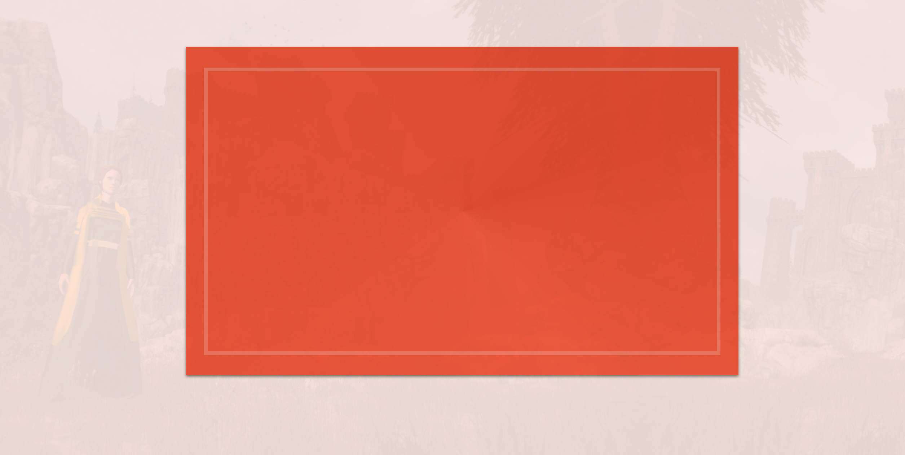
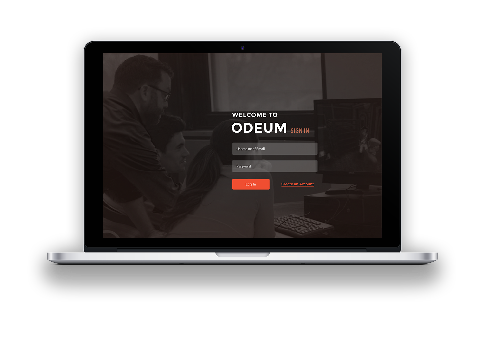
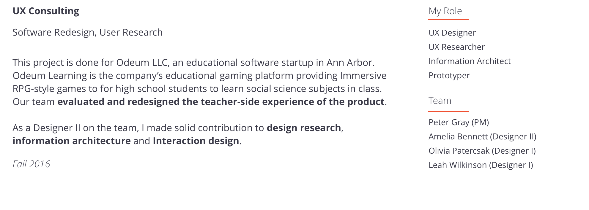

“My biggest fear is that we launch this and then teachers have a hard time using it... The games are good, but we want to take a methodological approach to make it easier for teacher to set up and administer expecially those who might not be tech savvy."

Odeum Learning
Make teacher’s educational game managing smooth again


- Ian, CEO of Odeum
I. Teachers are not gamers
Not every high school teachers are tech-savvey, or at least they believe they are not.
As middle school students nowadays grow up with Facebook and World of Warcraft, Teahcers are not. A lot of teachers are not gamers themselves. This poses first challenge on the design of teacher's panel of this educational game platform.
Also, part of the issue is related with the wordings. “'Creating a game' sounds like the opposite of comfort," said by one of the teachers in the interview.
II. A need to "jump on and play"
The actual concern of a teacher to start using an educational game is not only the own level of tech-savvy, but the time that it takes for them to get the idea and get to the point that they can use it in classroom. I kept this requirement for usability in mind when designing the experience and cleared out the roadblocks in the product's onboarding experience, so that teachers could pick it up easily.
"Teachers only have an hour or so prep time. They need to quickly know what’s going on on your product, in the end can take information and put it in a report card."
- Sean, teacher at Wyandotte Roseville High School core member at Odeum
III. Current navigation/structure is confusing
From heuristic evaluation and user testings, some severe usability issues with the existing product are identified:
- Lack of clear indication of where you are at the system
- No proper feedback at some point of the system after a user perform an action
- Not enough visual prompt regarding info hierarchy

Teachers view it as an administrative tool
Create Clear Structure
With the user research data, I aimed to build an approachable content architecture to rid them of any confusions that are in the current version.

Design Principle 1 & 2:
Provide teachers with comfortable paths to get where they need.
Support them to perform this task without leaving the system.
"Classes" and "Games" sections would cater to two types of teacher's behavior:
- A teacher possibly already have an idea of what games can be used through word of mouth or via Odeum's website as what it is now for the company. The flow would be: create a class folder -> add game(s) to this class.
- Browse the games that is available -> "Oh, this game would be useful to my xyz class" -> Use it.
A clear entry to "Help Center" provides teachers with a quick place to find tutorial or ask for help regarding the use of the app, which teachers would find reassuring. At the same time, as Odeum is constantly develop its features, a build-in help center would provide it a place for updates.